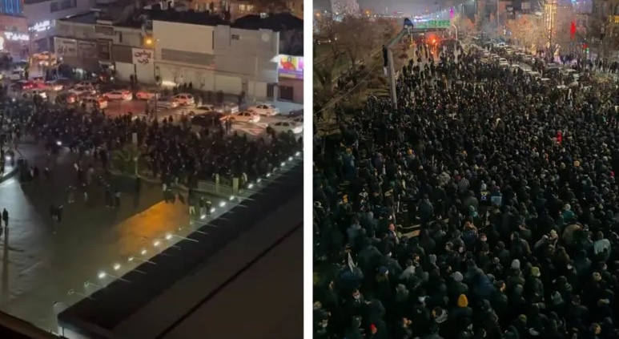
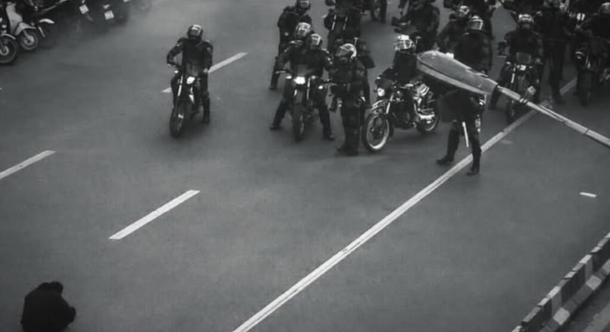
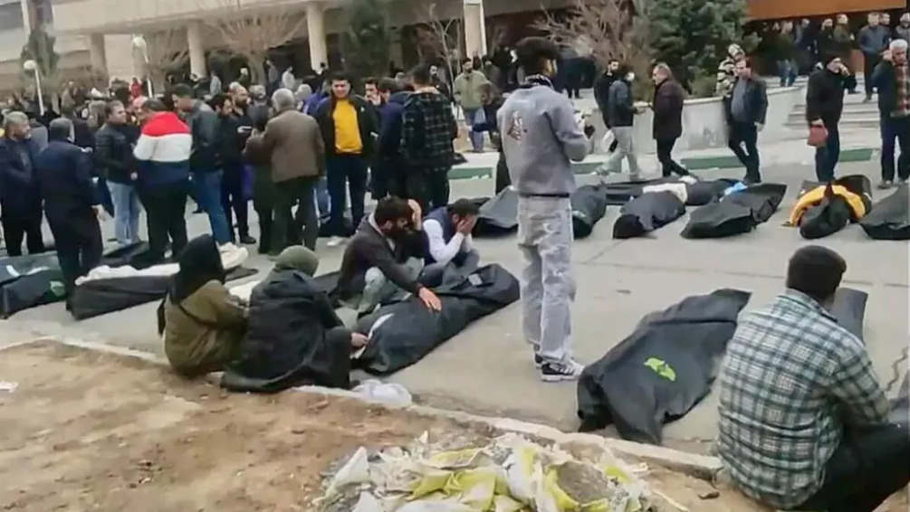
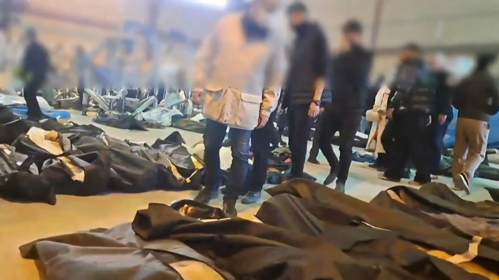
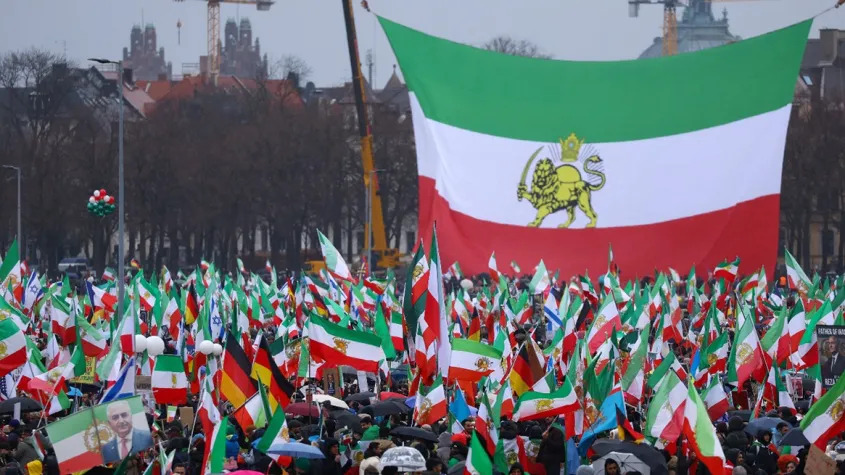
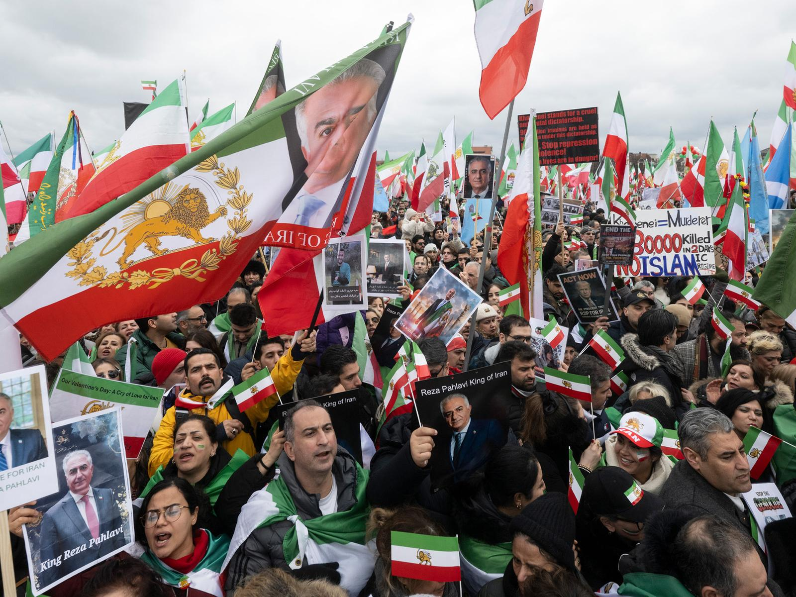
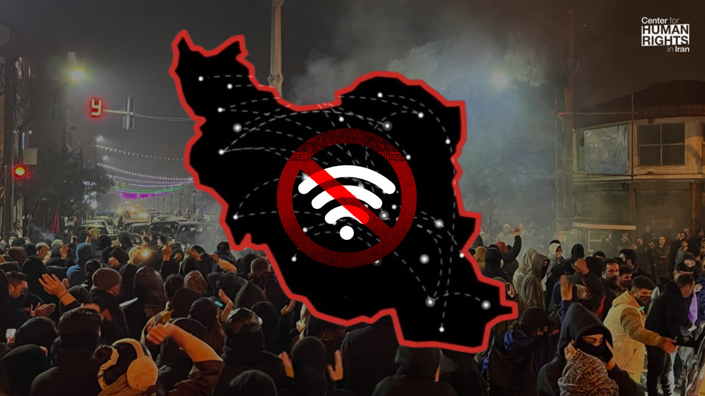

Real Stories That Must Be Heard

Name, Age
Short story about their life and current situation.

Name, Age
Another individual story highlighting their background.







Documenting protests, restrictions, and lives affected
Updated: April 2026Widespread demonstrations emerged across the whole country.
IR(Islamic Republic) Iran shut the internet down on its own people.
Reports indicate authorities killed tens of thousands of people in streets.
Large numbers of individuals were reportedly detained and tortured.
Authorities started executing innocent people
IR regime violates human rights in prisons.
The country that once stood for freedom is fighting for its own freedom.
Be the voice of silenced Iranians.
See and hear what has been done to certain individuals.
A few of countless individuals murdered, tortured or about to be.
Since the end of December 2025, nationwide protests have taken place across Iran. They initially began mainly due to following reasons:
Inflation is around 59.2%, while incomes
remain nearly unchanged.
Around 80% of the population lives in
poverty. At the same time, the currency has lost
massive value:
What started as frustration of living under such conditions turned into a movement where many people openly demanded that the system of the Islamic Republic of Iran should no longer exist.
Reports indicate that internet access was heavily restricted for extended periods, limiting communication between people inside Iran and the outside world.
After January 8th and 9th, Iran was almost completely cut off from the internet. For about two weeks, there was a near-total blackout. Around January 24th-25th, limited access became possible again - mostly through VPNS, but again the internet has been shut down since 27th of February until today.
VPNs on the other hand are being sold with high prices and only to the individuals who protect the IR regime's propaganda. To this day, many people have no free access to social media or the internet in general. Communication with the outside world remains severely restricted.
The nights of January 8th and 9th are considered a turning point. Calls spread across social media, urging people to go out into the streets at the same time, and that is what millions of people did. During these hours, the situation escalated dramatically by security forces. Reports and videos show that security forces deliberately fired at protesters without regard for age or situation. Among the victims were also children and uninvolved civilians. To this day, reports state that at least 36,000 people were killed during these two nights.
After the protests, tens of thousands of people were arrested. Among them are also children and teenagers, who are at risk of facing the death penalty. Many families received no information for days about their loved ones. In numerous cases, they were later contacted and told to collect the bodies. Families often had to pay very high amounts of money to receive the bodies of their loved ones. Funeral ceremonies are frequently banned or strictly controlled. Many reports also show that victims had severe injuries and signs of torture before their death. Especially disturbing is that the bodies of women are often not returned at all or only under difficult conditions.
One of the most alarming developments is the sharp increase in executions.
The situation in prisons - especially for
political prisoners - is critical.
In 2026 alone, more than 10,000 people have been arrested.
Prisons are severely overcrowded.
Conditions are alarming:
Over 2,500 years ago, one of the earliest ideas of human rights emerged in the Persian Empire. Under Cyrus the Great, values like dignity, freedom, and equality were declared. Today, in the same land, people are fighting to reclaim those very rights. A country that once stood for freedom has become a place where people die for using their voice.
Speak about it.
Share this information.
Tell others what is happening.
Make visible what is being hidden.
Help raise awareness about the executions,
because THEY ARE HAPPENING NOW.
Be the voice for people in Iran whose voices have been silenced.
Short story about their life and current situation.
Another individual story highlighting their background.